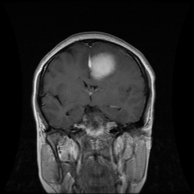
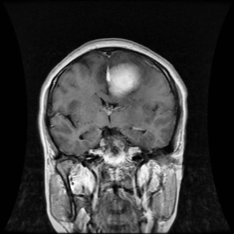
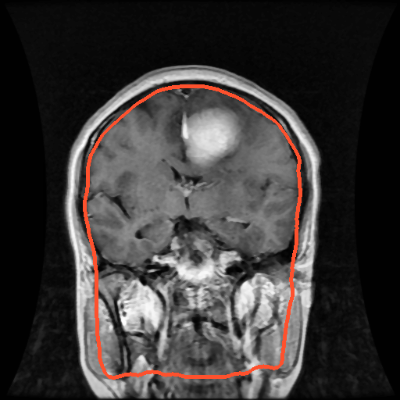
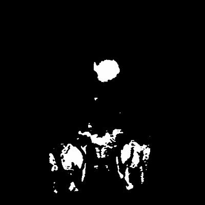
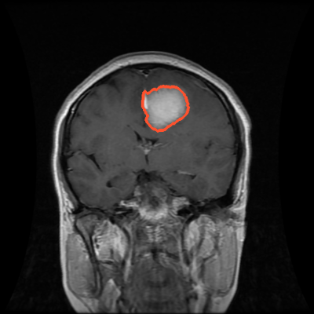

Introduction
This system looks at a brain MRI scan, finds the tumor and suggests its type: glioma, meningioma or pituitary. It uses classic image processing only. There is no AI and no training.

1 Load
Read the scan as grayscale
2 Denoise
Median filter removes speckle

3 Enhance
CLAHE boosts local contrast

4 Remove skull
Threshold and erosion

5 Find bright areas
Otsu brightness thresholds

6 Check rules
Size, shape and brightness
Glioma
Meningioma
Pituitary
7 Suggest type
Rules on location and look